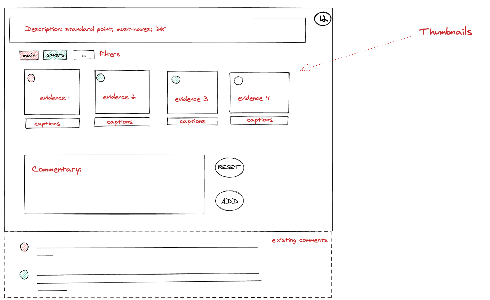

UI makeover
See description at README: https://github.com/lxierita/makers-employer-reference
See notes at: Notes on the MER app
See part 1 at: September weekon: Makers ER app
Plan
What:
use REST; use GraphQL for projects only after understanding the architecture of ncu-main-graphql
How:
What: Set up database
How:
What:
How:
What: